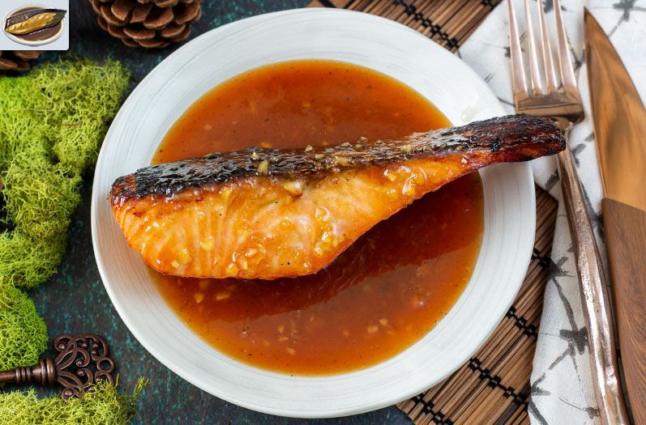

Honey Glazed Salmon
Prep Time: 30 mins
Cook Time: 40 mins
Total Time: 1 hr and 10 mins
Servings: 4

Description
Made exclusively with the finest salmon curated throughout Hyrule, Honey Glazed Salmon has been a fan favorite of Hylian familes throughout the ages.
With a sweet kick of honey soy sauce, there aren't many who can resist the flavor themselves. Not even Ganondorf himself.
Ingredients
- 1 lb salmon, skin on and cut into 3 portions
- 1/2 cup of honey
- 1 tbsp white miso
- 2 tbsp sake
- 1/4 cup of rice wine
- x2 4 cups of water
Steps
- Combine the honey, miso, sake, rice wine, and water into a bowl. Let this marinate in the refrigerator along with your salmon for 30 minutes
- Preheat oven to 400 degrees Fahrenheit. Prepare a baking tray with aluminum foil and nonstick spray. Afterwhich, place the salmon on the foil to bake for approximately 20 minutes.
- Serve when ready.